Populiariausios kelionių kryptys 2018 metais
Keliauti įdomu, nes galime pažinti kitas kultūras, pamatyti įvairius gamtos ir žmogaus kūrinius, plėsti akiratį. Žemiau pateikiu populiariausius turistų lankytus miestus 2018 metais.
1. Bankokas
„Angelų miestas“ ar „Rytų Venecija“ - taip dar žinomas didžiausias Tailando miestas.
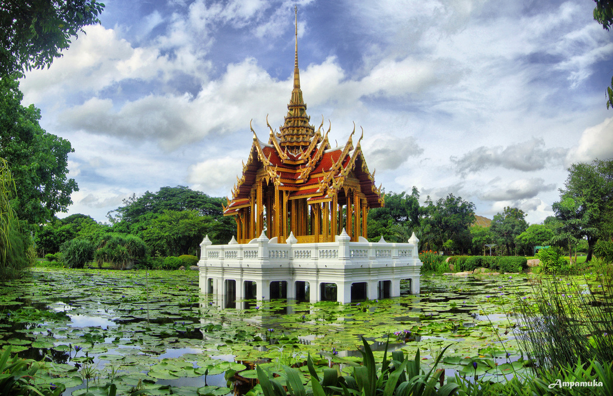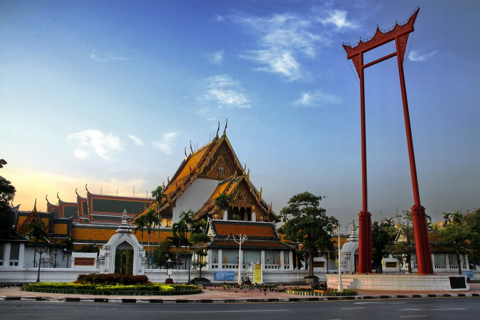
2. Londonas
Tai miestas, kurio metro stotyje buvo įrengtas pirmasis pasaulio eskalatorius. Beje, po dienos jis sugedo.
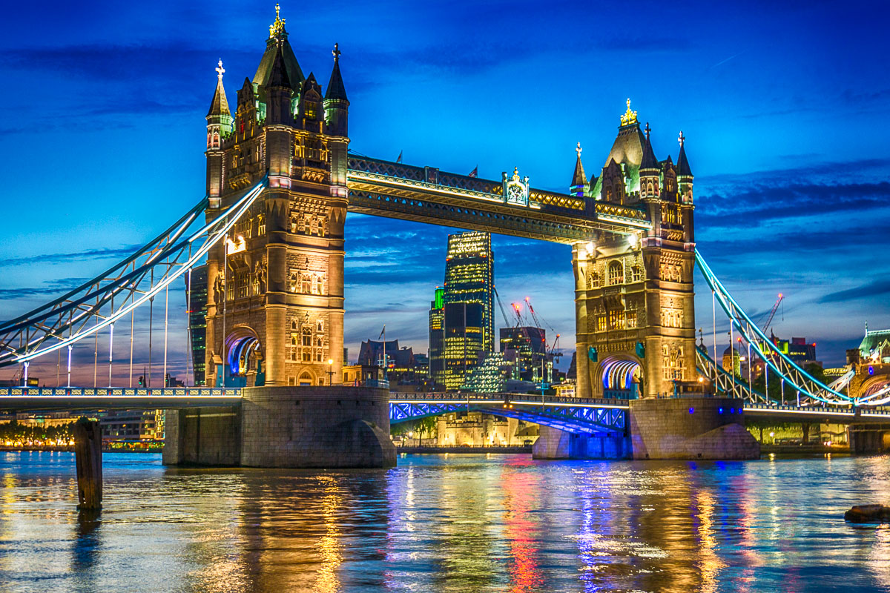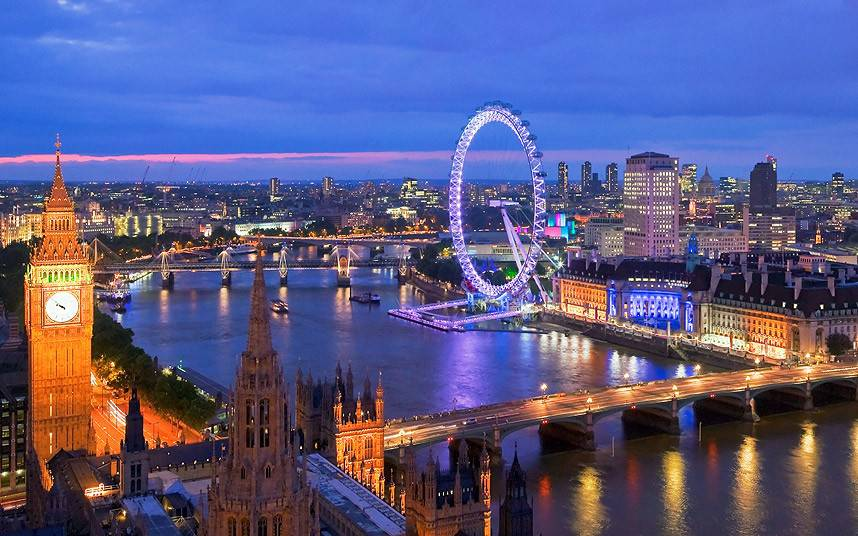
3. Paryžius
Šis miestas dažnai vadinamas „Šviesų miestu“ dėl daugybės šviesuolių, rašytojų, mokslininkų ir poetų, traukiančių į Prancūzijos sostinę.
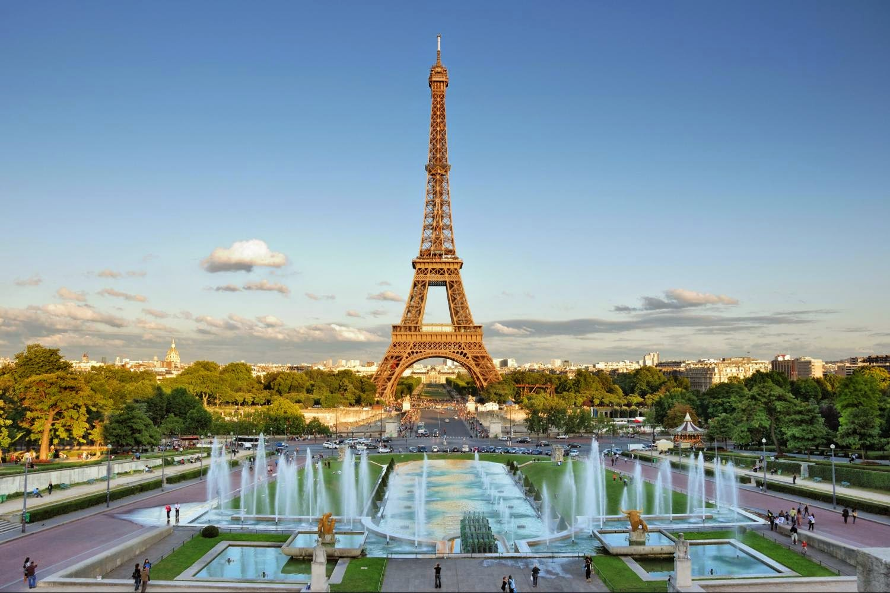
4. Dubajus
Didžiausiame JAE mieste policija važinėja naujausiais ir galingais automobiliais, kad galėtų pavyti greitį viršijančius automobilius.
 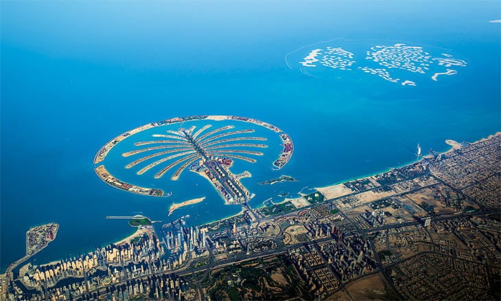
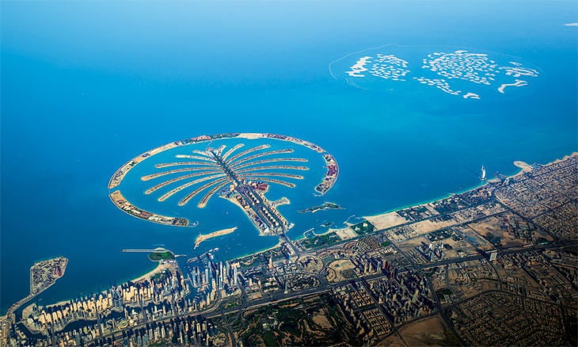
5. Singapūras
Čia daug keistų įstatymų - pavyzdžiui, draudžiama spjaudytis, o kramtomosios gumos galima įsigyti tik vaistinėse su receptu.
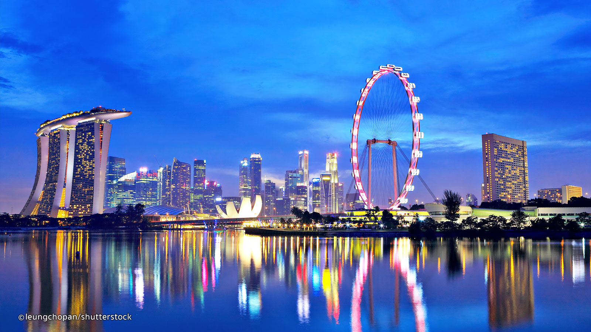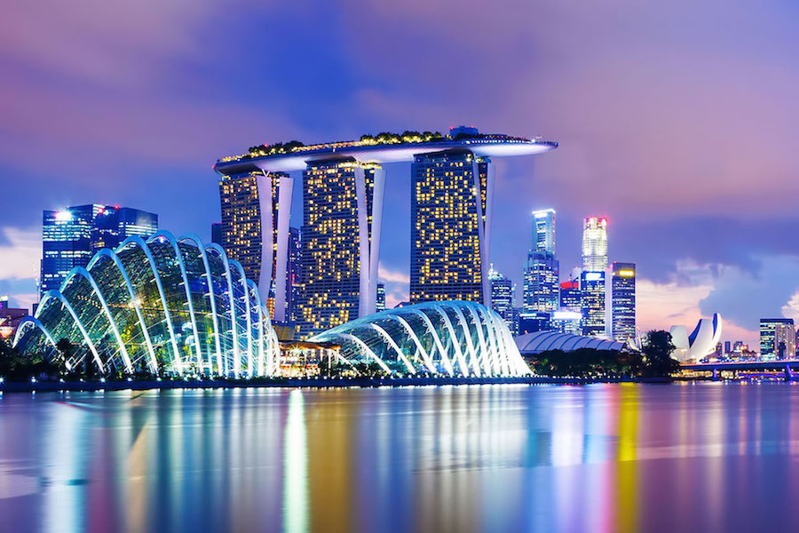
6. Niujorkas
Niekada nemiegančiame mieste konkurencija labai didelė - net metro muzikantai turi sudalyvauti atrankose norėdami groti metro stotelėse.
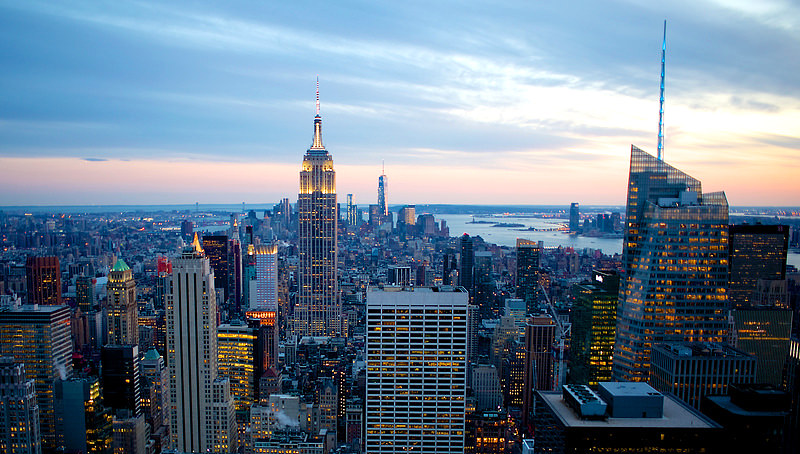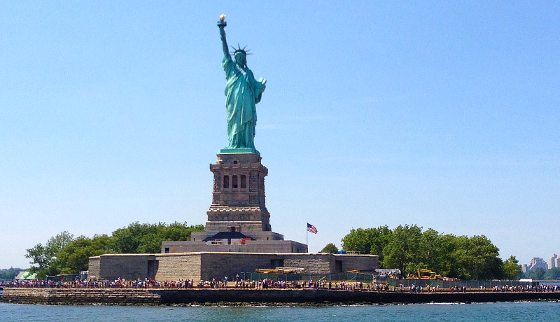
7. Kvala Lumpūras
1996 m. čia buvo uždraustas besaikis lūpdažių naudojimas.
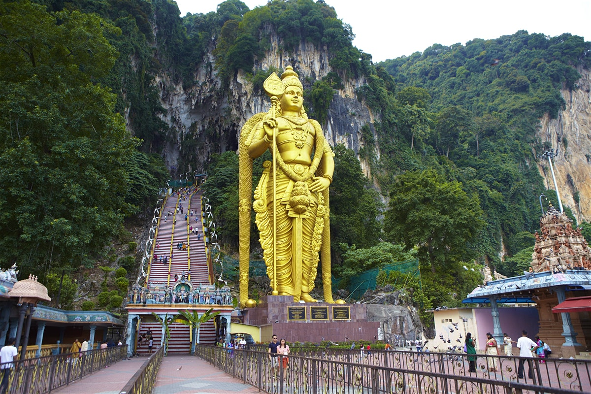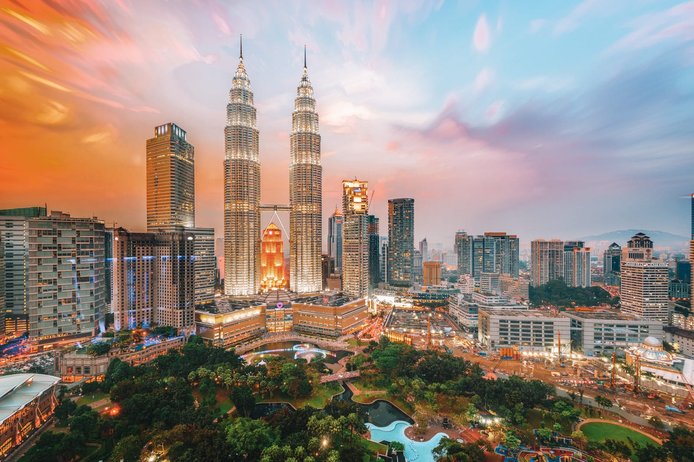
8. Tokijas
Didžiausias pasaulio miestas, kuriame vien nuo centro iki pakraščio važiuoti geležinkeliu užtrunka apie valandą.


9. Stambulas
Osmanų imperijos laikais čia buvo 1400 viešų tualetų, nors likusioje Europoje nebuvo nei vieno.
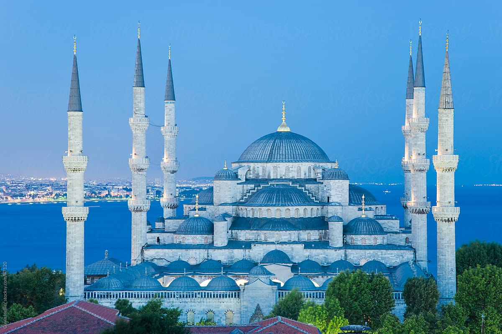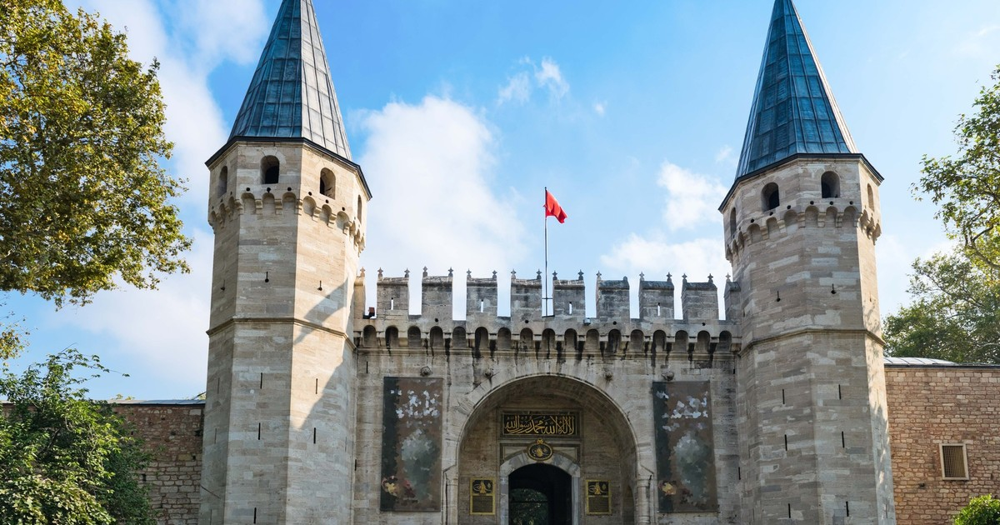
10. Seulas
Pietų Korėjos sostinėje greičiausias interneto ryšys pasaulyje, o nuo 2017 metų kiekviena vieša erdvė turi ir nemokamą Wi-Fi.
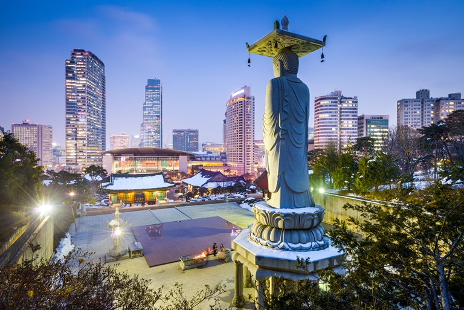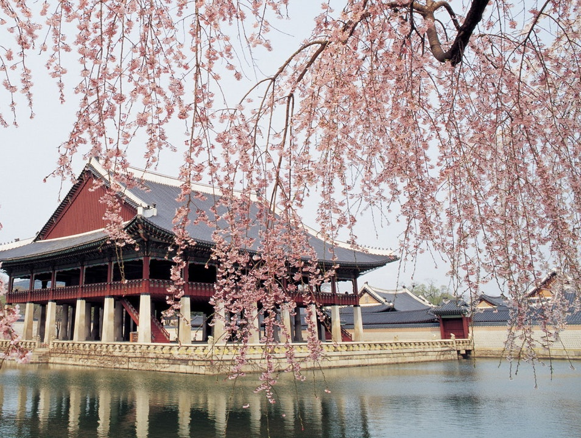
„Pasaulis yra knyga, ir tie, kurie nekeliauja, skaito tik pirmą puslapį“ - Šventasis Augustinas.
Šaltinis - http://www.traveller.com.au/worlds-most-popular-cities-for-tourists-2018-named-h164d2